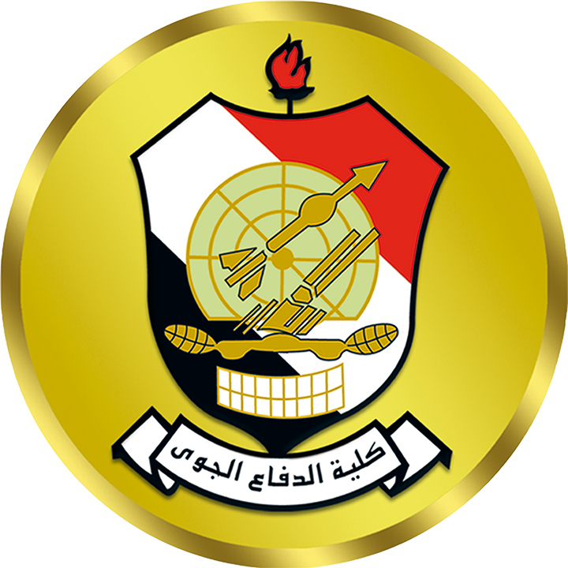

<mat-toolbar>
    <div class="container-fluid">
        <div class="d-flex justify-content-between align-items-center">
        <div>
            <button routerLink="wrsha/fix-transactions" mat-button class="example-icon favorite-icon" aria-label="Example icon-button with heart icon">
                <mat-icon>handyman</mat-icon> الورشة
            </button>
            <button routerLink="storage/preview" mat-button class="example-icon favorite-icon" aria-label="Example icon-button with heart icon">
                <mat-icon>gite</mat-icon> المخزن
            </button>
        </div>
        <div class="logo">
            
        </div>
    </div>
    </div>
</mat-toolbar>